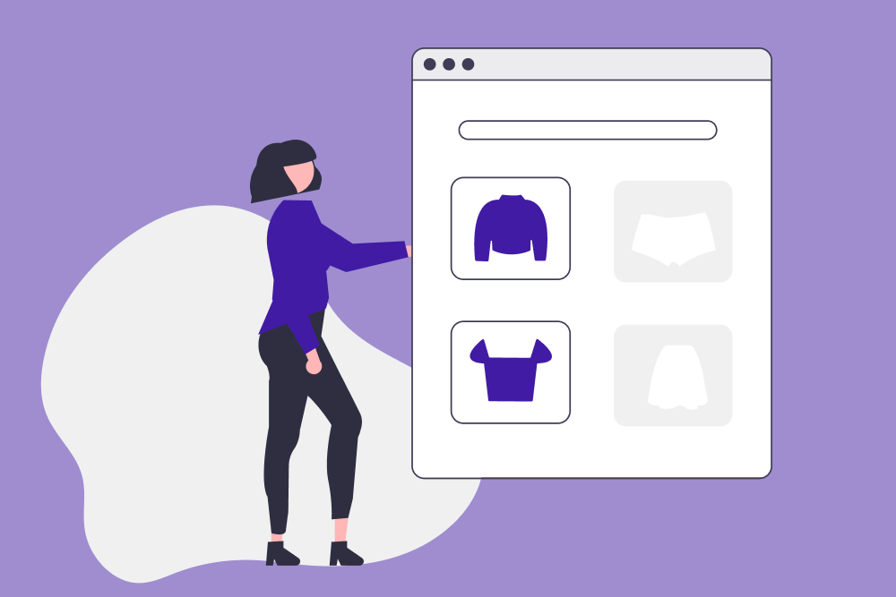

Buy Now, Pay Later

Project Overview
- Organization: RBC
- Role: Design Research Intern
- Team: Emily Cho, Maggie Chen
Background
Buy Now, Pay Later (BNPL) is a method of paying for online purchases in instalments that’s taken off in popularity. Consumers can pay for an item in instalments interest-free for no extra charge - with no impact on your credit. During my internship at RBC, I worked with design research interns on the Mobile and I Want a Home journey teams to investigate this emerging alternative form of credit in Canada.
Our main research question was,
Why do people between 18-35 choose to defer online payments using BNPL?
Our hypothesis was that people chose to use BNPL in order to:
- Take advantage of interest-free payments and
- Have the instant gratification of purchasing items they may not be able to pay for in full immediately.
Methods
- Literature review
- Heuristic evaluation
- Expert interview
- Unmoderated experiment
- Remote moderated interviews
When proposing this project, we wanted to use robust research methods in order to thoroughly understand this new product space. We chose to interview BNPL users as well as those who hadn’t used BNPL but were open to the idea. By speaking with both groups, we were able to address the needs and experiences of BNPL users as well as the imagined experience for non-users. We wanted to understand what factors pushed consumers from awareness to engagement with BNPL.
Key Findings
Through our research, we found that people choose to defer payments because:
- They want to take advantage of interest-free payments without relying on conventional credit,
- Flexbility in spreading out large transactions,
- The instant gratification of things they may not be able to pay for in full immediately.
Through our research, we created two personas of the average BNPL user: savvy and spendy.


The main themes of our research were trust and gratification. BNPL users had to balance their trust of a BNPL provider’s legitimacy versus their mistrust of conventional credit. Interestingly, trust in a merchant (like a well-known cellphone brand) transferred to trust in BNPL providers. As one participant recalled, “[These phones] are 100% legit… obviously, they’re not going to scam me.”
BNPL users were also divided between savvy and spendy when choosing what to purchase using BNPL. The most common items purchased using BNPL were furniture and appliances, and clothing and accessories. Savvy users were more likely to use BNPL for purchases over $1000 and spendy users were more likely to use BNPL for purchases under $150. Overall, savvy users were more likely to have done research about the product they were purchasing as well as the BNPL provider they used. In contrast, spendy users were more likely to purchase impulsively and do little to no research about the BNPL provider they used.
What surprised me most in this research was that spendy users were always going to spend. In surveys as well as moderated interviews, spendy users stated that if BNPL wasn’t an option, they would have used their credit card to purchase the item and pay the minimum balance. This was true of emergency purchases and ‘fun’ purchases.
Conclusion
Some describe BNPL as an old product that’s been repackaged for millennials. What makes BNPL different is that it is increasingly available for all kinds of purchases and that it is extremely easy to access. BNPL requires no credit checks - just your email and debit card. This is also part of BNPL’s appeal to those with low credit, no credit, or no access to credit.
Through this work, we were able to better understand the appeal of BNPL as well as what young consumers look for in credit alternatives. During my time on the Finance my Business team at RBC, credit was a topic that is important for both business owners and consumers. The results of this research were shared not only across the three teams working on this project, but throughout the design team at RBC.
Thank you for reading!